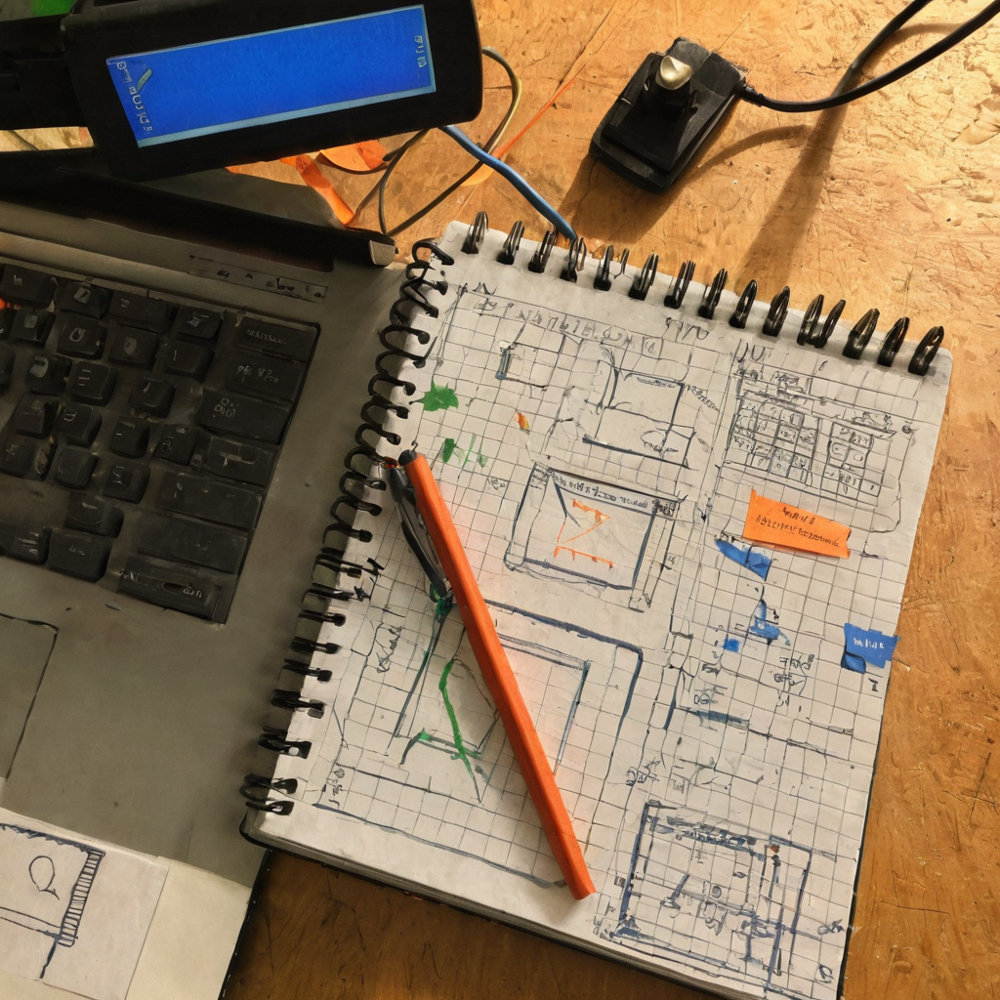

Some bookmarks aren't announcements. They're just good questions sitting out in the open, waiting for someone to actually chase them down. That's what stopped me here.
@hadamcik posted a question on X aimed at two accounts: @permutocapital and @chia_project. The gist: Permuto Capital has been working on bringing stocks on-chain using an approach the post refers to as the 'AC/DC concept,' and the post doesn't spell out exactly what that stands for beyond the reference itself. The question is why that approach seems focused on the US, when there are plenty of jurisdictions outside SEC territory that might be open to something similar. The post also asks why Chia itself isn't pushing revocable CATs (Chia's token standard, built with a revoke function so issuers can maintain compliance control) as a path to native on-chain stocks elsewhere. No links, no answer, just the question sitting there: is this even possible outside the US?

Tokenizing real securities is one of the more genuinely useful things a blockchain can do, and it's also one of the hardest, because the hard part was never the tech. It's the legal wrapper around the asset. Revocable CATs exist specifically because regulators want issuers to retain some control (freezing bad actors, responding to court orders, enforcing KYC) and a token standard that can't do that is a nonstarter for anything regulated. Chia built that capability early, which is one of the reasons this ecosystem keeps getting looked at seriously for real-world asset work.
But the US isn't the only regulatory environment on earth, and it isn't even the most flexible one for this kind of experimentation. Plenty of jurisdictions have their own securities frameworks, some more accommodating to on-chain issuance than the SEC has historically been. If revocable CATs can satisfy a compliance-minded regulator in one country, the underlying question is whether that same structure could satisfy a different regulator somewhere else, or whether every jurisdiction needs its own bespoke legal and technical lift.
What it does: revocable CATs give an issuer a built-in way to freeze or reclaim tokens, which is the kind of lever regulators tend to want before they'll bless an on-chain security.
Who it helps: any project trying to bring traditional financial instruments on-chain while staying inside a regulatory box, and any market where local rules make token-based issuance more approachable than in the US right now.
What problem it solves: the trust gap between 'this is just a token' and 'this is a token that a regulator would recognize as a compliant security.'
What still needs work: everything the post is actually asking about. There's no confirmed answer here for why the current focus seems US-centered, or whether other jurisdictions have been evaluated and ruled out, or whether it's simply a matter of sequencing (start with the biggest, most scrutinized market first, expand later). I don't know, and neither does the post.
What I'd test first: if I were poking at this, I'd want to see a small pilot in a jurisdiction with clearer or friendlier digital securities rules, just to see if the same revocable CAT structure holds up under a different legal regime without a full rebuild.
Where this could go next: if it turns out the compliance layer really does generalize across jurisdictions, that's a meaningful signal for how far this kind of tokenization could travel. If it doesn't, that's useful information too.
I like this question because it's the right kind of impatient. Permuto Capital working on bringing stocks on-chain through Chia is exactly the kind of real-world use case I want this ecosystem known for, not just as a technical flex but as something that actually changes how people access markets. Revocable CATs were a smart design choice for exactly this reason, they give issuers a compliance lever that regulators can actually work with. Whether that translates cleanly outside the US is a genuinely open question, and I don't think anyone's proven it one way or the other yet. That's fine. I'd rather see people ask this out loud than assume the US is the ceiling.
Keep an eye on whether Permuto Capital or anyone else in the Chia ecosystem talks publicly about expansion plans or jurisdiction-specific pilots. If revocable CATs get tested against a non-US regulatory framework, that's worth a follow-up article on its own.
Source: X post by @hadamcik, https://x.com/i/web/status/2077850562737897796, retrieved on 2026-07-16. No external references were included in the post.